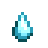

Geologist's Bundle in the Boiler Room.
Geologist's Bundle in the Boiler Room.Minerals are items that can be found in the Mines and the Skull Cavern. Most minerals are acquired from geodes after having Clint process them. Some are found on the ground and some can be mined from nodes, which are also found in the Quarry. They can also sometimes be acquired as Monster Drops, as gifts from Villagers, or from the Statue of Endless Fortune. Minerals (other than geode minerals) are also possible items found in Fishing Treasure Chests.
Minerals can be donated to the Museum for rewards and achievements. Minerals not yet donated will have an item description of "Gunther can tell you more about this if you donate it to the museum." After one of that mineral has been donated, the item's description will appear. There are 53 different minerals which can be donated.
All Minerals, Gems, and Geodes can be used in the spool of the Sewing Machine located inside Emily and Haley's house to Tailor clothing, once the Sewing Machine is unlocked. All minerals, gems, and geodes can be used to dye existing clothing using the Sewing Machine, and some can be used to dye clothing using Dye Pots.
_________________________________________________________________________________________________________________
Foraged minerals are found on the ground in The Mines and the Skull Cavern.
They can be picked up in the same way that other forageables can, and if the Gatherer profession is chosen at Foraging level 5 then the player has a chance of a double harvest.
They are used in crafting recipes and in the Geologist's Bundle in the Boiler Room.
Note that picking up foraged minerals normally does not award Foraging XP, but a bug results in 7 Foraging XP awarded only for a duplicate mineral created by the Gatherer profession.
Quartz

A clear crystal commonly found in caves and mines.
Earth Crystal

A resinous substance found near the surface.
Frozen Tear
A crystal fabled to be the frozen tears of a yeti.
Fire Quart

A glowing red crystal commonly found near hot lava.